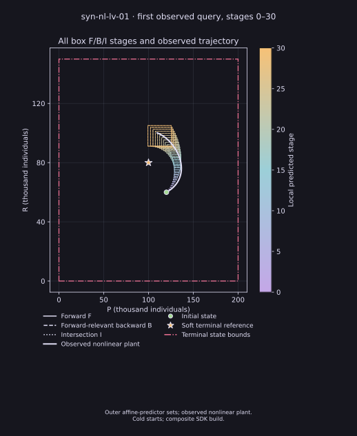
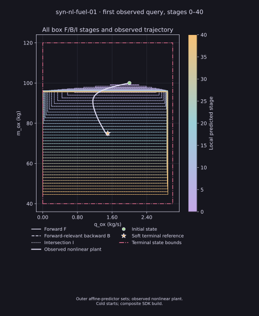
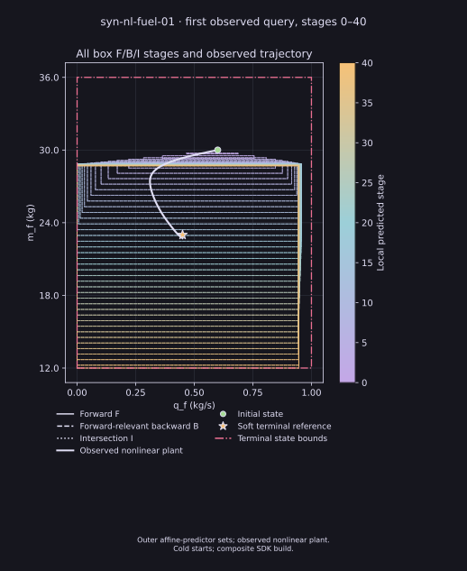

Continuous affine-history control: functional evidence
Observed-state numerical episodes · direct and selected F/B/I profiles
What ran
Each query optimizes the full remaining recovered affine-history relation with the original continuous action bounds and source cost. The first control is applied to the nonlinear plant. Original task horizons and source identities are preserved. These are individual functional results, not five-representation coverage. IPOPT gives local numerical solutions; no global optimality, continuous-time safety, or performance ranking is claimed.
Completed physical episodes
| Task | Optimizer | Holds | Source objective | Evidence |
|---|---|---|---|---|
| Lotka–Volterra | HiGHS QP | 30/30 | 0.09206356098706904 | Receipt · Raw ZIP · Trajectory · Phase |
| Earth orbit | CasADi/IPOPT | 20/20 | 65.22966483569324 | Receipt · Raw ZIP · Trajectory · Phase |
| Fuel | CasADi/IPOPT | 40/40 | 0.003834213429545932 | Receipt · Raw ZIP · Trajectory · Phase |
| Lotka–Volterra with F/B/I box geometry | CasADi/IPOPT | 30/30 | 0.09207050915639435 | Receipt · Raw ZIP · Trajectory · Phase · All-stage F/B/I and observed trajectory |
| Fuel with F/B/I box geometry | CasADi/IPOPT | 40/40 | 0.0038341007246844383 | Receipt · Raw ZIP · Oxidizer plane · Fuel plane |
| Lotka–Volterra with F/B/I zonotope geometry | CasADi/IPOPT | 30/30 | 0.09206357506388757 | Receipt · Raw ZIP · Trajectory |
| Lotka–Volterra with F/B/I parallelotope geometry | CasADi/IPOPT | 30/30 | 0.09207050915639435 | Receipt · Raw ZIP · Trajectory |
| Lotka–Volterra with F/B/I ellipsoid geometry | CasADi/IPOPT | 30/30 | 0.09206356266610233 | Receipt · Raw ZIP · Trajectory |


F/B/I box episode
The Lotka box route adds selected full-state forward, forward-relevant backward and intersection memberships before the original-cost IPOPT solve. The independent audit checked 1,485 memberships and replayed 5,940 support certificates across the 30 observed-state queries. The raw preparation receipt incorrectly calls this controller direct affine-history MPC; its geometry field, resolved graph and saved queries show the box F/B/I route. The original receipt remains unchanged. The mixed SDK/current-source build is identified in each record. These feedback episodes used a cold start at every observed query; the source warm-start contract was not implemented. The fuel worker finished all control holds before the policy and solver source files were edited while the parent performed replay and rendering; its source capsule and independent checks are retained.
All-stage feedback geometry and observed trajectories
Each image shows the selected outer F, forward-relevant B, and I boxes at every predicted stage of the first observed query. The line follows the full nonlinear plant episode. The dotted and dashed styles distinguish sets; the soft reference is not a terminal constraint. Full-state intersections were formed before projection. Screen and print variants use the same saved records.






Incomplete orbit box attempts
The first orbit box attempt applied 3 of 20 holds, then independent source-cost validation rejected an IPOPT epigraph discrepancy. A separate same-provider refinement capture applied 4 of 20 holds, then IPOPT reported a local infeasibility status. Neither outcome establishes source infeasibility or a complete trajectory. Both used cold starts. Their accepted prefixes were independently checked against source constraints, costs and support certificates.
First partial receipt · First raw ZIP · Refinement partial receipt · Refinement raw ZIP
Incomplete HiGHS fuel attempt
The worker reached its declared 1,800-second limit after 2/40 holds. The third full-history query had 38 intervals remaining; no solver response was returned. This timeout does not establish infeasibility or incompatibility.
Provenance and plots
The earlier direct-profile raw images and coverage text incorrectly labeled those controllers as NMPC. Raw ZIPs preserve those files unchanged; the separately linked plots use corrected labels and were rendered from saved records without a controller rerun. Each completed record includes a render receipt. Original attempt preparation recorded binary source as unknown; separate build receipts document source revision, binary hash, and source capsule. Each directory contains checksums and an independent audit source.